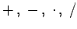
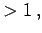
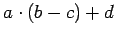
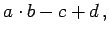
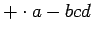
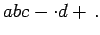

Inhalt Index DeskTop Bronstein

 Algebra und Diskrete Mathematik Algorithmen der Graphentheorie Bäume und Gerüste Bäume
Algebra und Diskrete Mathematik Algorithmen der Graphentheorie Bäume und Gerüste Bäume


Arithmetische Ausdrücke kann man durch binäre Bäume graphisch darstellen. Dabei werden Zahlen und Variablen Knoten vom Grad 1 zugeordnet, den Operationen  entsprechen Knoten vom Grad  und der linke bzw. rechte Teilbaum repräsentiert den ersten bzw. zweiten Operanden, der im allgemeinen wieder ein Ausdruck ist. Man spricht auch von geordneten binären Bäumen. In der folgenden Abbildung ist ein Beispiel dargestellt.
Das Durchlaufen von geordneten binären Bäumen kann auf drei verschiedene Arten erfolgen, die rekursiv beschreibbar sind:
| Inorder-Durchlauf: | linken Teilbaum der Wurzel (nach Inorder) durchlaufen, |
| Wurzel durchlaufen, | |
| rechten Teilbaum der Wurzel (nach Inorder) durchlaufen. | |
| Preorder-Durchlauf: | Wurzel durchlaufen, |
| linken Teilbaum der Wurzel (nach Preorder) durchlaufen, | |
| rechten Teilbaum der Wurzel (nach Preorder) durchlaufen. | |
| Postorder-Durchlauf: | linken Teilbaum der Wurzel (nach Postorder) durchlaufen, |
| rechten Teilbaum der Wurzel (nach Postorder) durchlaufen, | |
| Wurzel durchlaufen. |
Beim Inorder-Durchlauf ändert sich die Reihenfolge gegenüber dem Ausgangsterm nicht. Die sich aus dem Postorder-Durchlauf ergebende Schreibweise wird Postfix-Notation, PN oder Polnische Notation genannt. Analog ergibt sich aus dem Preorder-Durchlauf die Präfix-Notation oder Umgekehrte Polnische Notation UPN.
Zur Implementierung von Bäumen kann man ausnutzen, daß Präfix- und Postfix-Ausdrücke den Baum eindeutig beschreiben.
| Beispiel |
|
In der obigen Abbildung ist der Term  durch einen Graphen dargestellt. Man erhält im Inorder-Durchlauf  im Preorder-Durchlauf  und im Postorder-Durchlauf  |